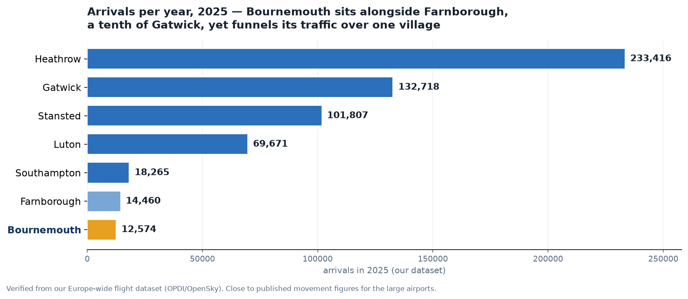

Comparable communities under concentrated flight paths have won real, named mitigation. Brockenhurst, a village of the same size under a National Park, has none. This is not a request for anything novel.

| Airport | Village (population) | Arrivals / yr | Protected landscape | Mitigation secured |
|---|---|---|---|---|
| Bournemouth | Brockenhurst (3,488) | 12,574 | New Forest National Park | None |
| Farnborough | Chiddingfold (2,960) | 14,460 | Surrey Hills AONB / South Downs NP | Formal CAA post-implementation review after the 2020 airspace change. |
| Gatwick | Newdigate (1,749) | 132,718 | Rural Surrey | Independent Arrivals Review (23 recommendations, all accepted); a standing Noise Management Board; raised continuous-descent height; noise insulation grants up to £4,300. |
| Southampton | Nearby villages | 18,265 | — | Night movements capped at 10 a month via a Section 106 planning agreement. |
What makes Brockenhurst different is concentration, not raw numbers. Our own track data for the busiest month (July 2025) shows a far higher share of Bournemouth's arrivals route directly over Brockenhurst (about 76%) than reach any comparator village. Where Gatwick and Farnborough spread their traffic across many communities, Bournemouth funnels almost its entire arrival stream over one National Park village, 9.7 miles out.
Airport volumes: arrival counts from our Europe-wide dataset (OPDI / OpenSky), 2025, close to published movement figures. Overflight share measured from the same track data (busiest month). Populations: 2011 and 2021 censuses. Mitigation: each airport's published noise material.